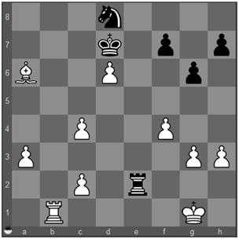

Ataque a Descoberto: Você concretiza o tema Ataque a Descoberto (Discovered Attack) quando, movendo uma de suas peças, libera um ataque que antes estava bloqueado por ela e, ao mesmo tempo, a peça que você moveu cumpre alguma outra função tática. Quando a peça que se moveu ataca o rei adversário, temos um Ataque a Descoberto com Xeque. Quando o rei adversário é atacado pela peça que teve sua linha de ação liberada, temos um Xeque à Descoberto. Quando, num Xeque à Descoberto, a peça que se move também dá xeque, temos um Duplo Xeque (Double Check). Um Duplo Xeque difere de um Duplo Ataque, no qual duas peças ou casas diferentes são atacadas ao mesmo tempo, enquanto que no Duplo Xeque os dois ataques simultâneos convergem sobre o rei adversário.

1... Rxd6
2. c5+
O avanço do peão branco, ao mesmo tempo em que dá xeque ao rei negro, descobre o ataque do bispo branco sobre a torre negra.
2... Rxc5
O negro que sair do xeque
3. Bxe2
e o branco pode tomar a torre.